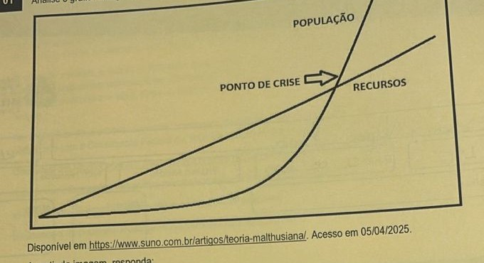
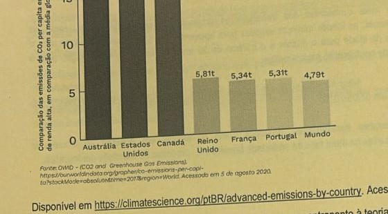
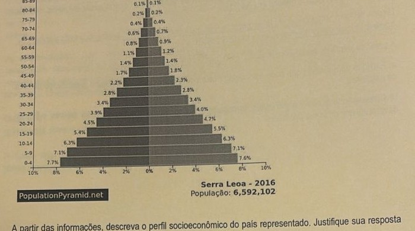

Professor: Leonardo
Analise o gráfico a seguir, que apresenta os dados utilizados como base para a teoria Malthusiana:

Disponível em https://www.suno.com.br/artigos/teoria-malthusiana/. Acesso em 05/04/2025.
A partir da imagem, responda:
a) Explique qual a previsão estabelecida pela teoria em questão.
b) Apresente dois contrapontos à previsão feita pela teoria.
Emissões de CO₂ por Pessoa em Países de Renda Alta

Fonte: OWID — CO2 and Greenhouse Gas Emissions. Disponível em https://climatescience.org/ptBR/advanced-emissions-by-country. Acesso em 04/05/2025.
De que forma os dados apresentados permitem estabelecer um contraponto à teoria Ecomalthusiana, que estabelece uma correlação entre impactos ambientais e superpopulações.
Faz três anos da Reforma da Previdência, mas o assunto ainda causa dúvidas aos trabalhadores de empresas privadas que estão se organizando para solicitar a aposentadoria pelo Instituto Nacional de Previdência Social (INSS). A Reforma trouxe mudanças significativas na idade mínima, tempo de contribuição e cálculo do benefício.
Além dessas mudanças, houve a criação de regras de transição específicas para cada situação. Isso serve para que o regime não seja alterado bruscamente, preservando a expectativa e suavizando as regras.
As aposentadorias mais conhecidas dos trabalhadores urbanos são por idade e por tempo de contribuição. Atualmente, as idades mínimas exigidas para aposentadoria são 65 anos de idade para o homem ou 62 anos de idade para a mulher e o mínimo de 20 anos de tempo de contribuição para o homem ou 15 anos de contribuição para a mulher.
Disponível em https://auniao.pb.gov.br/noticias/caderno_diversidade/tres-anos-de-reforma-da-previdencia. Acesso em 05/05/2025.
A partir das informações apresentadas, descreva como a reforma em questão se vincula às transformações verificadas na atual fase da sociedade brasileira no processo de transição demográfica.
A Coreia do Sul, que há quase uma década enfrenta uma grave crise demográfica em decorrência da baixa taxa de natalidade e rápido envelhecimento da população, recebeu uma boa notícia. Segundo o Statistics Korea (instituto nacional de estatística), a taxa de natalidade do país cresceu 0,03 pontos em 2024, interrompendo uma tendência de queda que já durava nove anos.
Segundo estimativas preliminares do governo, em 2024, uma mulher sul-coreana teve, em média, 0,75 filhos ao longo da vida, contra 0,72 em 2023. A taxa de fertilidade da quarta maior economia da Ásia vinha caindo desde 2015, quando era de 1,24.
Disponível em https://veja.abril.com.br/coluna/giro-pelo-oriente/coreia-do-sul-tem-boa-noticia-sobre-um-grave-e-persistente-problema/. Acesso em 05/05/2025.
A partir da leitura do texto, responda:
a) Explique uma medida que pode ser adotada pelo poder público para estimular o crescimento da taxa de natalidade.
b) Considerando a composição etária da população sul-coreana, explique em quais setores o Estado deveria investir de forma prioritária.
Analise o gráfico a seguir:

A partir das informações, descreva o perfil socioeconômico do país representado. Justifique sua resposta através dos dados fornecidos pelo gráfico.
Pandemia acelerou mudança demográfica (em milhões)
| Ano | População em idade ativa (PIA) | População total |
|---|---|---|
| 2010 | 124.897.049 | 191.445.607 |
| 2015 | 135.155.077 | 199.013.544 |
| 2020* | 136.079.991 | 204.689.622 |
| 2025* | 142.708.206 | 212.249.443 |
| 2030* | 139.874.777 | 209.782.117 |
| 2035* | 133.107.658 | 204.288.742 |
| 2040* | 126.383.591 | 198.587.929 |
Fonte: Ana Amélia Camarano, 2022. *Projeções preliminares.
A partir dos dados apresentados e seus conhecimentos, diferencie os conceitos de população economicamente ativa e inativa.
O movimento da Reforma Sanitária nasceu no contexto da luta contra a ditadura, no início da década de 1970. A expressão foi usada para se referir ao conjunto de ideias que se tinha em relação às mudanças e transformações necessárias na área da saúde. Essas mudanças não abarcavam apenas o sistema, mas todo o setor saúde, em busca da melhoria das condições de vida da população.
Grupos de médicos e outros profissionais preocupados com a saúde pública desenvolveram teses e integraram discussões políticas. Este processo teve como marco institucional a 8ª Conferência Nacional de Saúde, realizada em 1986. Entre os políticos que se dedicaram a esta luta está o sanitarista Sergio Arouca.
As propostas da Reforma Sanitária resultaram, finalmente, na universalidade do direito à saúde, oficializado com a Constituição Federal de 1988 e a criação do Sistema Único de Saúde (SUS).
Disponível em https://pensesus.fiocruz.br/reforma-sanit%C3%A1ria. Acesso em 05/05/2025.
A partir das informações fornecidas pelo texto e seus conhecimentos, responda:
a) A qual fase da transição demográfica o processo se relaciona?
b) Descreva as possíveis consequências demográficas do processo.